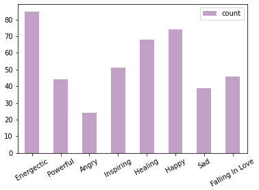

The dataset we used in this website consists of 19 Korean and English albums with English translated lyrics of each track. To explore the dataset, we chose to focus on these 2 questions:
To investigate more into BTS’s lyrics, we counted the number of times each word appeared, and the bar chart above shows the first 20 most frequently appeared words in all BTS lyrics. However, even though we were able to filter out stop words like articles or prepositions, other words like “oh”, “i’m”, and “like” were still present in our bar chart, which does not provide meaningful information.
We also interviewed 3 ARMYs to label moods to ~200 BTS songs in our dataset. Based on their opinions, the most common mood in BTS’s music is “Energetic”. At the same time, we can see that BTS’ music is very diverse and has many songs in every mood category.
More details regarding the dataset can be found on the Kaggle page. To reproduce our results, the full code can be found here.